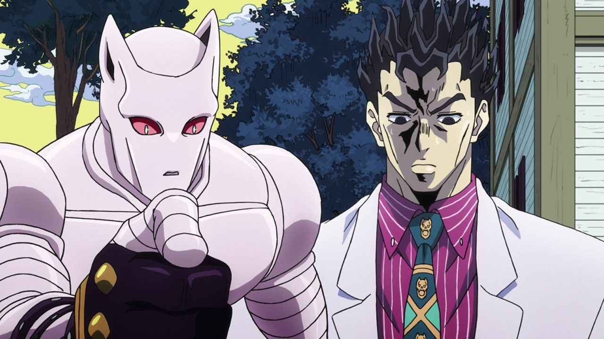
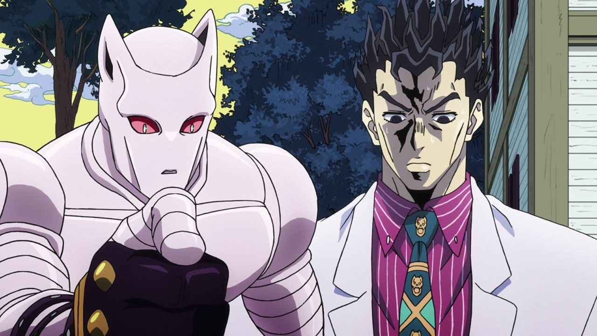

Hiya, everyone! Welcome back to Jojo’s Bizarre Comparisons! This week we’re going to take a look at Episode #30, “The Cat Who Loved Yoshikage Kira”! Don’t expect anything radically different this time around. In the TV version, Kosaku/Kira consistently had a weird face, and some of these shots have been retouched, but it’s nothing particularly big. Anyway, let’s get this done!
- Let’s begin with the first one of said retouched faces (plus a more shaded collar):
- Next we have Shinobu, sporting a slightly thinner face. Her mouth has also been slightly moved:
- These three following shots demonstrate that Araki doesn’t kill just dogs:
- In this last uncensored shot of… Does the cat even have a name? Is it Tama? Or is Tama the name of the other cat the Kawajiris kept? Anyway, in this last uncensored shot of the cat, the last piece of glass on the right has been made bigger, the last wound has more blood dripping down its leg and belly, and the blood on the floor now has a more blurred outline:
- In this animation, a window no longer magically disappears and then reappears (it was most likely set on the wrong layer):
- Prepare yourselves for some pretty gross shit. Alright. You prepared? Here we go:
- I know, I know. That is pretty gross. In this next shot, the uncensoring continues, plus Stray Cat in the foreground is slightly darker:
- Uncensored again! As you can see, David pro recreated very faithfully Araki’s complete inability to draw feet that actually look like feet:
- In this shot they added the missing sandal, and Shinobu’s eye area has been retouched:
- I’m starting to think Araki just hates animals in general:
- Here, Kira has an additional set of darker shadows, and some lines of his face have also been retouched:
- Kira’s face has been retouched again here (you’ll get used to it by the end), and his shirt has received the same treatment:
- It’s incredible what a difference it makes to the overall design if you just make the eyes proportionate with the rest of the face, eh?:
- In this shot of the cutest cat/plant hybrid you’ll ever see in your miserable existence, Stray Cat’s eyes have been redrawn, and a couple of bits have been re-shaded…:
- …and the camera then zooms out, moving a bit more to the left in the BDs:
- Kira’s face has been once again slightly retouched in this here shot (his eyes also have a pupil now):
- The center of Stray Cat’s face is darker in this VERY CUTE SHOT:
- This other VERY CUTE bit has no zoom in the BD version:
- Here, Kira’s face has been completely redrawn (hurray!), the reddish… things on the back of Stray Cat have been shaded, and the shading on Kira is darker near the bottom:
- A couple of very minor retouches on Kira’s face here…:
- …some bigger eyes here…:
- …and his face again here:
- Stray Cat’s center is darker again here:
- In this shot, both Kira and Killer Queen’s faces have been retouched (look at that KQ! It no longer has that dent on his forehead!), Kira’s tie has been retouched and his shirt no longer has four buttons on the collar:
 

- Both Kira and Shinobu’s faces have been heavily retouched here…:
- …and, when the shot zooms out, we can see that Kira’s tie and collar have also been retouched, and Stray Cat has been moved like five pixels up:
- In this shot of Stray Cat yelling at a foot, the heel of Kira’s shoe is made from a darker leather:
- Kira looks a little less bored here:
- His eye has been slightly retouched here:
- Kira’s heel once again in this almost-upskirt shot:
- Here’s a couple of retouched Kira faces:
- And again here, plus his belt has a buckle now:
- In this split shot, Kira has BIGGU SHOULDERS, his eyes have been retouched and Killer Queen has received a very slight makeover:
- Kira is once again looking less bored here, and the sky is slightly brighter behind him:
- Man, they really didn’t get his eyes right in the TV version:
- Now this is what I call a redrawn face! Shinobu’s face is also slightly less shaded:
- In this shot, Shinobu and Kira’s pants have slightly darker shades, and Kira’s face is looking better:
- Here, the books on the desk are darker and Hayato’s face has been retouched:

- In this shot, Hayato’s waistcoat is shorter on his shoulder…:
- …and when he turns around, his face has been slightly retouched as well:
- A couple of retouched faces (I’m so grateful for the first one):
- In this shot of Hayato finding out he’s not that into BDSM, his face has been redrawn and the air effects look better:
- Here Kira has a waay smaller jaw, his brow is more furrowed and he has been shaded more:
- Alright, the episode itself is over! Now for a couple of ending differences. Fist, I have to apologize: these differences were probably in since the BD started using the Kosaku version, but since the TV version was stuck with the Kira version of the ending, I couldn’t do a proper comparison. As you can see here, the rat in the diamond looks better (how many times have you heard these words in this particular order?):
- And, in this final shot, the J is slightly smaller while the background is a bit more zoomed in:
Alright, that’s episode #30 done! Phew! I can’t believe I’ve been doing this for 45 episodes. And we’re not even halfway done! Not even close! We’ll be halfway done in another 11 episodes and a half. Damn! However, I think that by doing parts 1, 2 and 4 first we’ve been getting the most intense comparisons out of the way, so the rest should theoretically be quicker and easier. Except for DIO’s World, of course. That will take a long time. Anyways, take care and I’ll see you next time (and it shouldn’t be too far away)!
Bye!